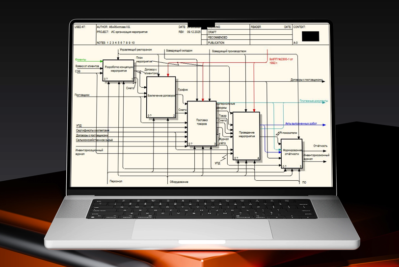

ИС мероприятия
2024ИС мероприятия — информационная система для ресторана «Жетиген», которая автоматизирует полный цикл организации мероприятий: от приёма заявок и бронирования залов до формирования отчетности по выручке и загрузке ресурсов. Интерфейс позволяет администратору быстро учитывать клиентов, формировать расписание, фиксировать услуги и контролировать оплату.
В рамках проекта были спроектированы структура базы данных, реализованы формы для работы с заказами и отчётами, а также настроены регламенты ввода данных. Это снизило количество ошибок при бронировании, ускорило обработку заявок и сделало процесс планирования мероприятий прозрачным для менеджмента.
